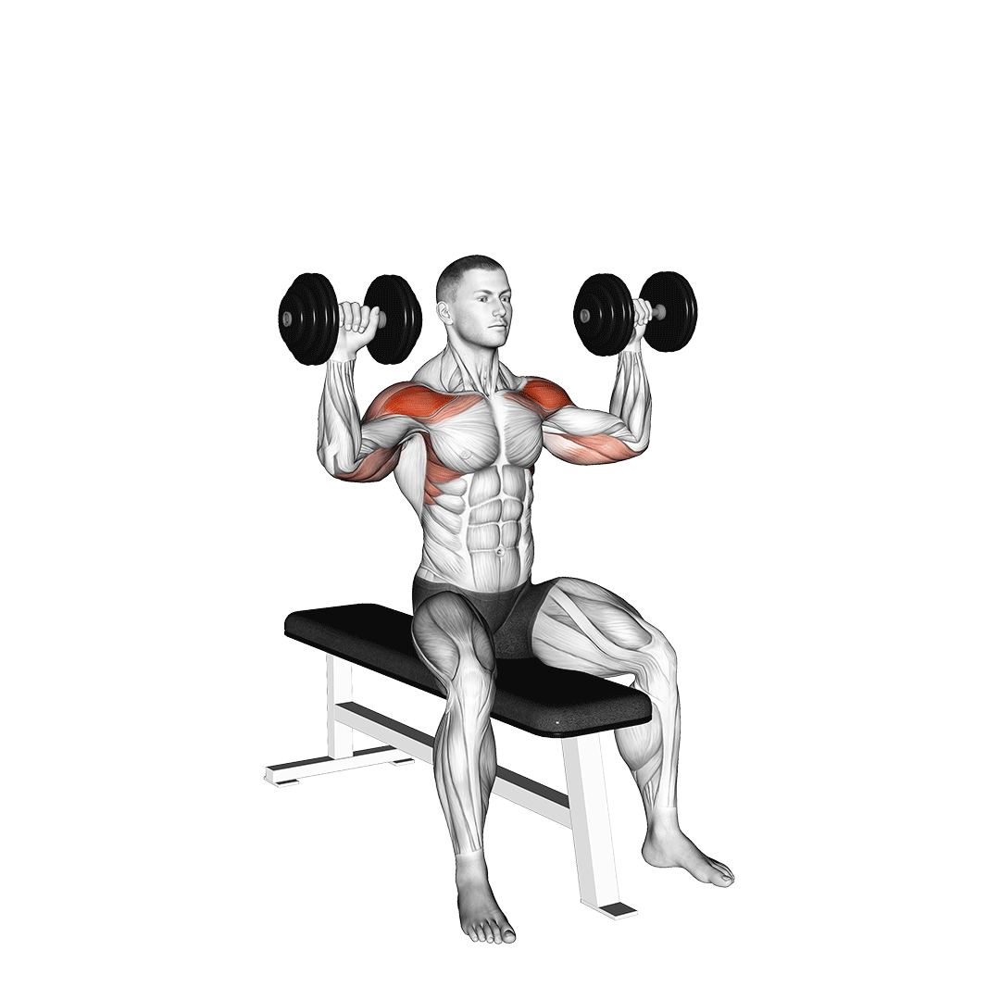

어깨 운동 꿀팁

시티드 덤벨 프레스
- 벤치에 앉아 양손으로 덤벨 들고 무릎 위에 올려놓기
- 상체 곧게 펴고 발 바닥에 단단하게 고정하기
- 덤벨 들고 손 위치 귀 옆으로 맞추기
- 양팔이 몸과 수평인지 확인하기
- 머리 위로 쭉 밀어주기
- 팔꿈치 어깨 라인까지만 내리기
주의사항
- 승모근이 아픈 경우, 동작 중 승모근이 어느 정도 개입하긴 하지만 팔꿈치보다 어깨를 먼저 들어 올릴 경우 상부 승모근의 개입이 커져 뻐근함을 느낄 수 있어요.
- 어깨가 불편한 경우, 상완이 안쪽으로 회전하거나 라운드 숄더가 있는 경우 팔을 들어 올리는 과정에서 어깨에 충돌이 생겨 불편함을 느낄 수 있어요. 팔의 움직임에 신경 쓰시고 흉근과 전거근, 광배근 스트레칭을 해보세요. 또한, 기본적으로 상완을 몸과 수평으로 맞춰서 동작하지만 불편하다면 상완을 약간 앞으로 가져와서 진행해보세요. 단 전완은 언제나 지면과 수직이어야해요.